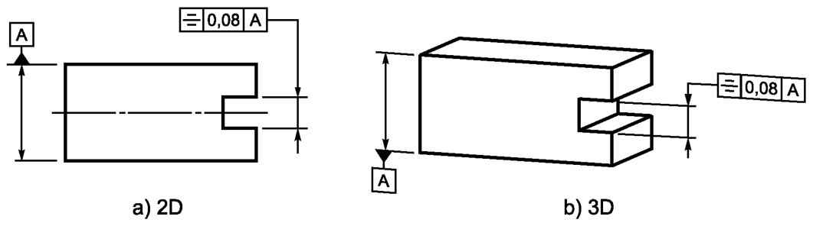
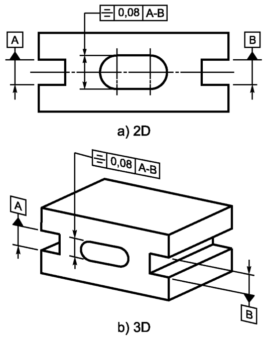
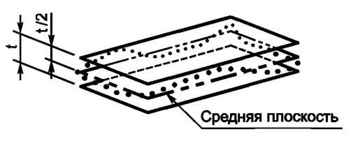

Выявленная средняя поверхность должна находиться между двумя параллельными плоскостями, расстояние между которыми равно 0,08, расположенными симметрично относительно базовой плоскости А, см. рисунок ниже
Выявленная средняя поверхность должна находиться между двумя параллельными плоскостями, расстояние между которыми равно 0,08, расположенными симметрично относительно общей базовой плоскости A-В, см. рисунок ниже
Поле допуска ограничено двумя параллельными плоскостями, расстояние между которыми равно значению допуска t, расположенными симметрично относительно средней плоскости (плоскости симметрии), определяемой в соответствии с заданными базами, см. рисунок ниже
